Таблицы истинности · Логические функции
📖 Открыть теорию к заданию 2 →Задание 2 ЕГЭ проверяет умение строить таблицы истинности и анализировать логические выражения. Вам даётся логическая функция и фрагмент её таблицы истинности — нужно определить, к какому столбцу таблицы относится каждая переменная.
Задание базового уровня, на решение отводится около трёх минут. Решать можно как вручную (анализируя логическое выражение), так и программно (перебором всех значений на Python).
💡 Два подхода: ручной метод развивает логическое мышление и применим для простых выражений. Программный — универсален и спасает, когда выражение сложное, а время поджимает. На экзамене полезно владеть обоими.
Суть метода: на основе логической функции строим собственную таблицу истинности, а затем сопоставляем её с фрагментом из условия. Начинаем с «особенных» переменных — тех, чьё значение жёстко определяется функцией.
Формулировка: «Миша заполнял таблицу истинности логической функции F = (z → ¬(y → x)) ∨ w, но успел заполнить лишь фрагмент из трёх различных её строк. Определите, какому столбцу таблицы соответствует каждая из переменных w, x, y, z.»
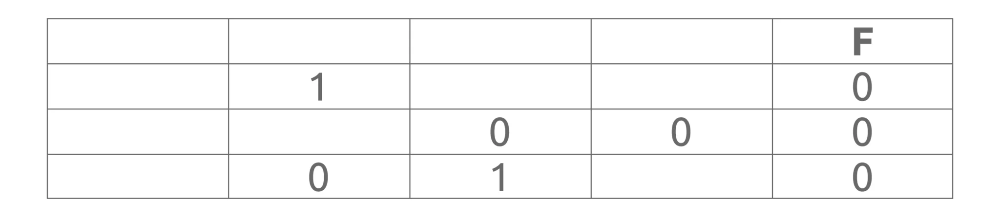
Функция F = (z → ¬(y → x)) ∨ w. Это дизъюнкция — она ложна, только когда оба операнда ложны. Поскольку во фрагменте все значения F = 0, получаем:
1 Столбец w — однозначно: всегда 0. Заполняем три строки нулями.
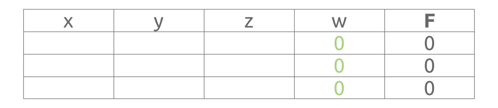
2 Импликация z → ... ложна только когда z=1, а следствие ложно. Значит, z = 1 во всех строках.
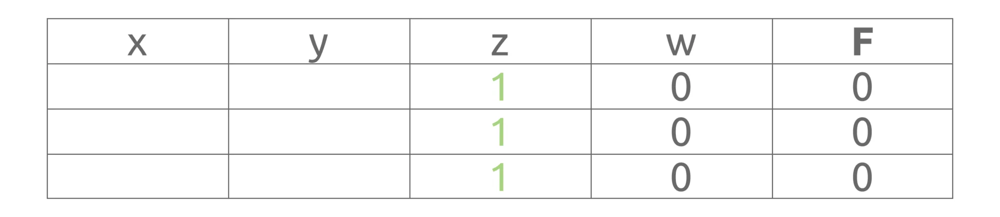
3 ¬(y → x) должно быть ложно → (y → x) истинно. По таблице импликации: (0→0)=1, (0→1)=1, (1→1)=1. Записываем все три комбинации.
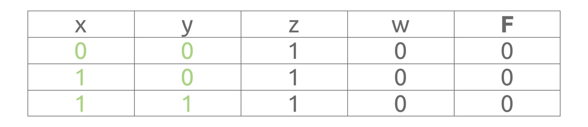
4 Столбец без единиц — это w. В условии это четвёртый столбец.
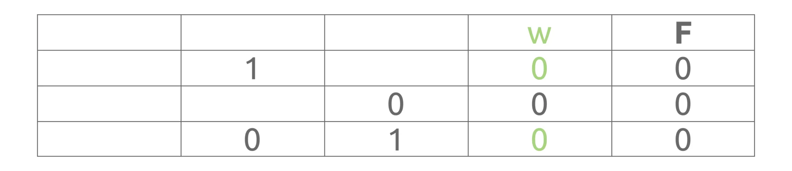
5 Столбец без нулей — это z. В условии это первый столбец.
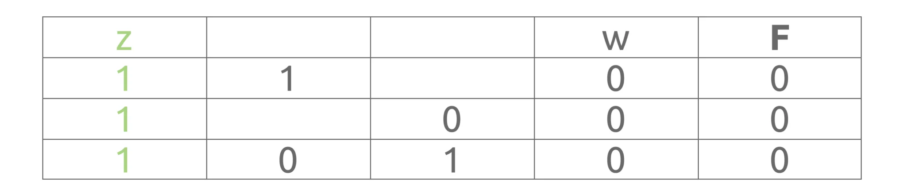
6 Смотрим на последнюю строку: во втором столбце 0, в третьем — 1. Это соответствует y=0, x=1 (импликация y→x истинна).
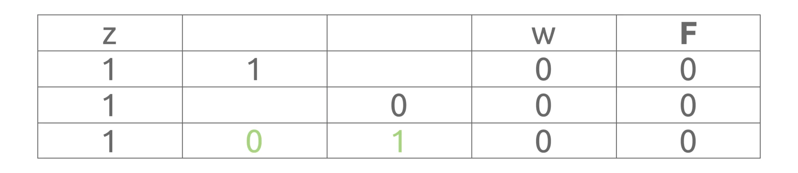
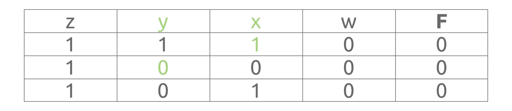
Формулировка: «F = ¬(x → z) ∨ (y ≡ w) ∨ y. Определите, какому столбцу соответствует каждая переменная.»
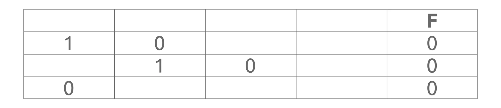
Функция — дизъюнкция трёх частей, все ложны. Значит y = 0 всегда. Тогда (y ≡ w) ложно при y=0 → w = 1 всегда. ¬(x → z) ложно → (x → z) истинно всегда. Выписываем комбинации (0,0), (0,1), (1,1).
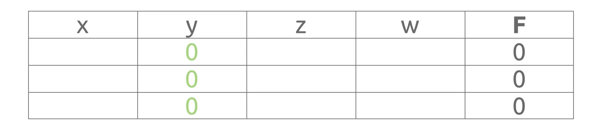
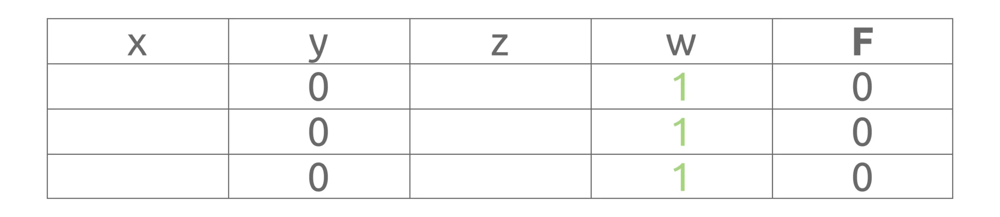
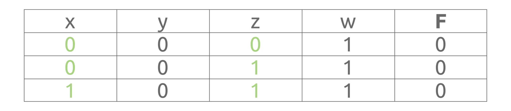
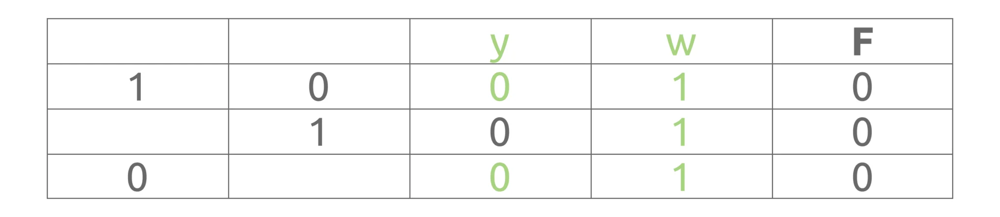
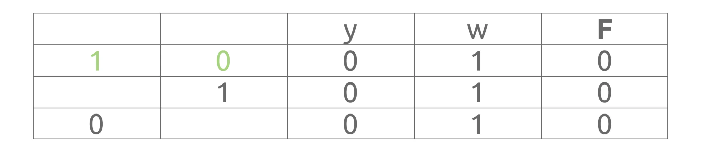
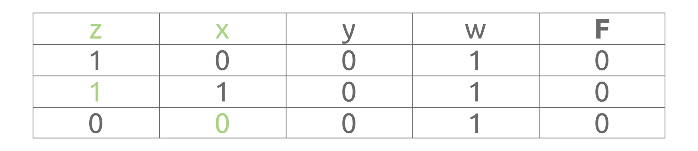
Когда логическое выражение сложное, можно перебрать все комбинации значений переменных (0 и 1) и вывести только те, при которых функция принимает нужное значение. Это универсальный метод — он работает для любой функции.
💡 Алгоритм:
Формулировка: «F = ¬(x → w) ∨ (y → z) ∨ ¬y. Во фрагменте таблицы все значения F = 0. Определите соответствие столбцов.»
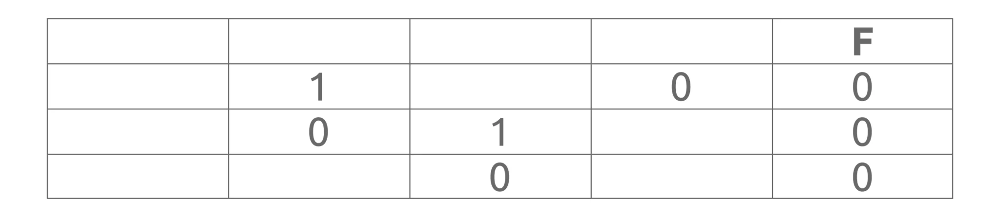
print('x y z w')
for x in 0, 1:
for y in 0, 1:
for z in 0, 1:
for w in 0, 1:
f = not (x <= w) or (y <= z) or not y
if not f:
print(x, y, z, w)
Результат:
x y z w 0 1 0 0 0 1 0 1 1 1 0 1
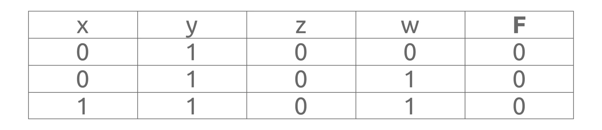
Сопоставляем: столбец с одним нулём — z, пустой столбец — y, второй столбец — x, третий — w.
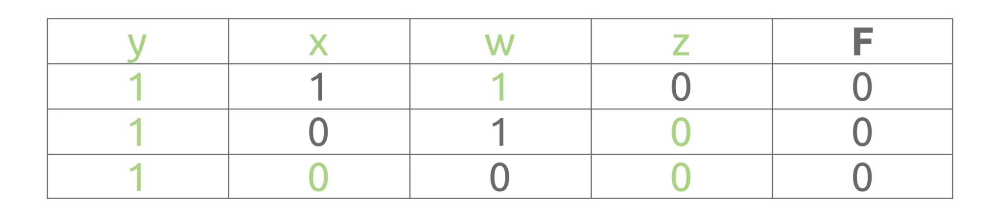
Формулировка: «F = (y → x) ∧ ¬z ∧ w. Во фрагменте таблицы все значения F = 1. Определите соответствие столбцов.»
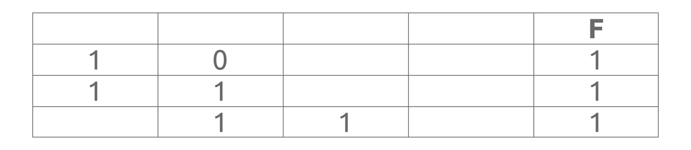
⚠️ Отличие: здесь функция должна быть истинной (F = 1), поэтому в условии пишем if f:, а не if not f:.
print('x y z w')
for x in 0, 1:
for y in 0, 1:
for z in 0, 1:
for w in 0, 1:
f = (y <= x) and not z and w
if f:
print(x, y, z, w)
Результат:
x y z w 0 0 0 1 1 0 0 1 1 1 0 1
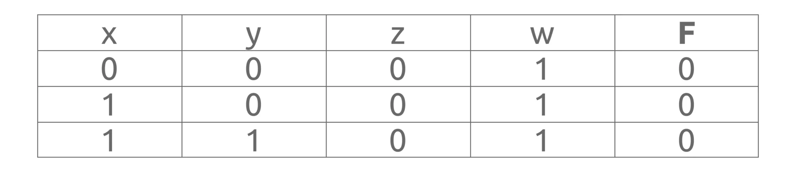
Сопоставляем: столбец с двумя единицами — w (первый), пустой столбец — z (четвёртый), третий столбец — y, второй — x.
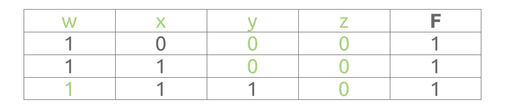
Материалы для самостоятельной практики появятся здесь позже.
Здесь будут размещены реальные варианты заданий для отработки навыков.